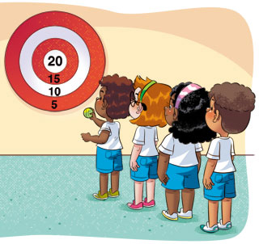

NÃO COBRE OS ALUNOS POR UMA PERFORMANCE TÉCNICA
O IMPORTANTE É QUE ELES PARTICIPEM DOS JOGOS RESPEITANDO A PRÓPRIA MOVIMENTAÇÃO E SEUS LIMITES.
O IMPORTANTE É QUE ELES PARTICIPEM DOS JOGOS RESPEITANDO A PRÓPRIA MOVIMENTAÇÃO E SEUS LIMITES.
NO PROCESSO DE APRENDIZAGEM DOS JOGOS DE PRECISÃO, A PARTICIPAÇÃO DOS ALUNOS É O FATOR QUE DEVE SE SOBRESSAIR À PERFORMANCE OU À TÉCNICA DE EXECUÇÃO ESPORTIVA.
PROCURE ADAPTAR OS JOGOS DE ACORDO COM AS POTENCIALIDADES DE CADA ALUNO. DESSA FORMA, O FOCO NO APRENDIZADO VALORIZA O QUE CADA UM CONSEGUE APRENDER E COM O QUE PODE CONTRIBUIR.